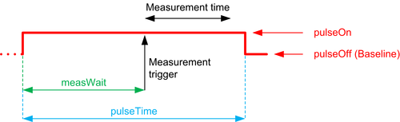

iPulse()
Specifies a higher or lower current, a baseline current and a pulse time for a current pulse to generate.
The generated pulse cannot be changed unintentionally. The function increases therefore the safety while debugging.
The following diagram shows how the pulse is defined:

The parameters of the diagram are defined as follows:
pulseOn |
The higher or lower value of the pulse. The value is to be defined by the first parameter of the function. |
pulseOff |
The baseline value of the pulse. The value is to be defined by the second parameter of the function. Note: The initial value that is shown as dotted red line in the diagram above is defined only by the previously applied settings. |
pulseTime |
The duration of the pulse. The value is to be defined by the third parameter of the function. |
measWait |
The position where the measurement begins after the settling time. This time is to be defined by function measWait(). |
Measurement trigger |
The initial trigger that defines the beginning of the measurement. The position is defined by measWait. |
Measurement time |
The measurement time is the required time for one ADC sample or the time for more ADC samples if averaging is enabled by function average(). Note: The sum of measWait and the required measurement time must always be smaller than the pulseTime. |
The function can be programmed only in the pattern‑based mode. The code‑based mode is not supported.
The two DC events for setting the two force values iPulseOn and iPulseOff as defined below are always executed in the same pattern burst regardless of the RDI_BEGIN() ... RDI_END() block execution mode.
Syntax
dcBase& dcBase& iPulse(double iPulseOn, double iPulseOff, double pulseTime);
Parameter |
Description |
|---|---|
iPulseOn |
The higher or lower current of the pulse. The parameter is shown as pulseOn in the diagram above. |
iPulseOff |
The baseline current of the pulse. The parameter is shown as pulseOff in the diagram above. |
pulseTime |
The duration of the pulse. |
Return value
A reference to the dcBase object.
Example
RDI_BEGIN();
rdi.dc("a").pin("A").vPulse(5 V, 1 V, 700 us).iMeas().measWait(600 us).execute();
rdi.dc("b").pin("B").iPulse(10 A, 0 A, 1 ms).vMeas().measWait(200 us).execute();
RDI_END();
rdi.id("a").getValue();
rdi.id("b").getValue();Functional changes
- Introduced in SmartRDI 2.2.0